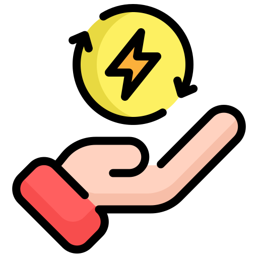

Üdvözlünk a fenntartható weboldalon!
A környezettudatosság kulcsfontosságú a fenntartható jövő érdekében. Íme néhány egyszerű, mégis hatékony tipp, amely segíthet a mindennapi életben és a munkahelyeken egyaránt, hogy csökkentsük a környezeti lábnyomunkat:
Tippek hogy környezettudatossabb legyél
Csökkentsd a műanyag használatot
Használj újrahasználható táskákat, palackokat és ételtároló edényeket. Kerüld a műanyag csomagolást és válassz papírból vagy üvegből készült termékeket. Válassz környezetbarát alternatívákat, például bambusz szívószálat, fából készült evőeszközöket.
Használj energiatakarékos eszközöket
Használj újrahasználható táskákat, palackokat és ételtároló edényeket. Kerüld a műanyag csomagolást és válassz papírból vagy üvegből készült termékeket. Válassz környezetbarát alternatívákat, például bambusz szívószálat, fából készült evőeszközöket.
Takarékoskodj vízzel
Rövidítsd le a zuhanyzást, és ne hagyd folyni a vizet a csap alatt, amíg nem használod. Használj víztakarékos eszközöket, mint például alacsony vízfogyasztású WC-k és zuhanyfejek. Gyűjtsd a csapvíz a növények öntözésére, ha nem tartalmaz vegyszereket.
Támogasd a fenntartható közlekedést
Használj tömegközlekedést, kerékpárt vagy sétálj, ha teheted, hogy csökkentsd a szén-dioxid kibocsátást. Ha autót használsz, válassz elektromos vagy hibrid járművet. Carpooling: Ossz meg utazásokat barátokkal vagy munkatársakkal, hogy csökkentsd az autók számát az utakon.
Vásárolj helyi és szezonális termékeket
Támogasd a helyi gazdaságot és csökkentsd a szállítási távolságokat, amelyek környezeti hatásokat eredményeznek. Vásárolj szezonális termékeket, amelyek kevesebb energiát és erőforrást igényelnek a termesztésük során.
Komposztálj
Komposztálj otthon, hogy csökkentsd a hulladékot és gazdag tápanyagokat adj a kertednek. Ha nem tudsz komposztálni, keresd fel a helyi komposztáló központokat vagy programokat.
Használj fenntarthatóbb anyagokat
Válassz környezetbarát, újrahasznosított vagy biológiailag lebomló anyagokat a háztartásban és a munkahelyen. Vásárolj bio- vagy fenntartható módon termesztett termékeket, mint például organikus élelmiszereket és fenntartható forrásból származó papírárut.
Tartsd karban a gépeket és eszközöket
Szervizeld rendszeresen a gépeket, hogy azok hatékonyabban működjenek és hosszabb ideig szolgáljanak. Ne dobj ki működőképes dolgokat, hanem javítsd meg őket, ha lehetséges.
Zöldítsd a környezeted

Ültess fákat és növényeket otthon, mert ezek segítenek a szén-dioxid felszívásában és tisztítják a levegőt. Ha van kerted, építs szemetes kertet, ahol a zöld hulladékot újrahasznosíthatod.
Növeld az informáltságot

Tájékozódj a környezetvédelemről és terjeszd a fenntarthatóság fontosságát barátaid, családod és kollégáid körében. Vegyél részt helyi környezetvédelmi programokban, önkéntes akciókban, hogy aktívan hozzájárulj a változáshoz.